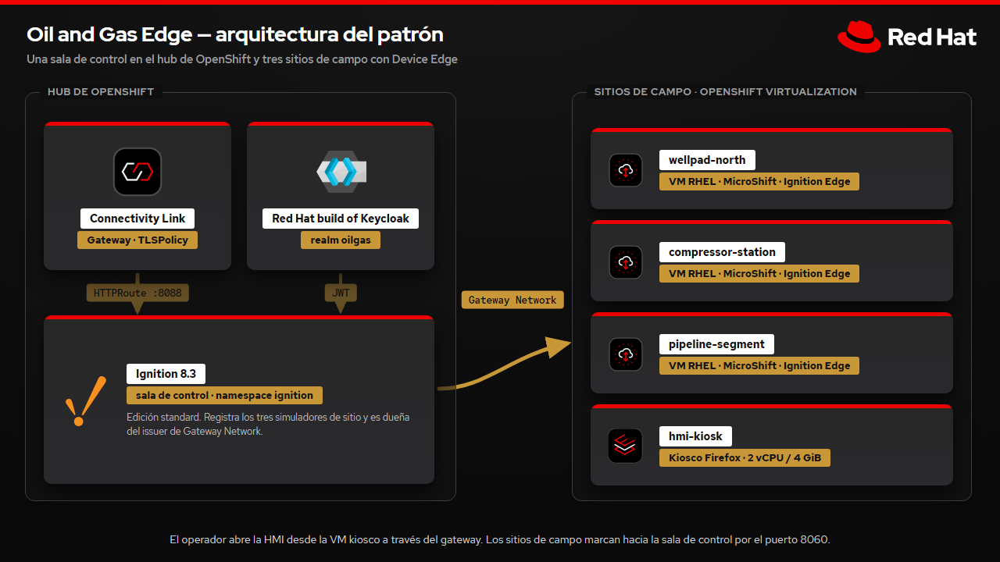
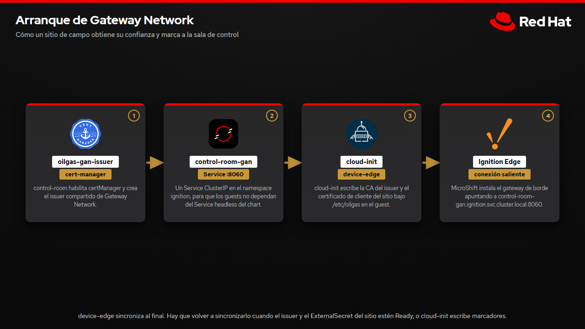
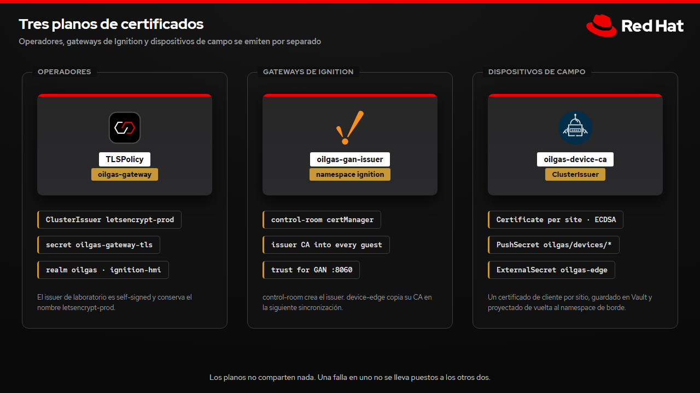
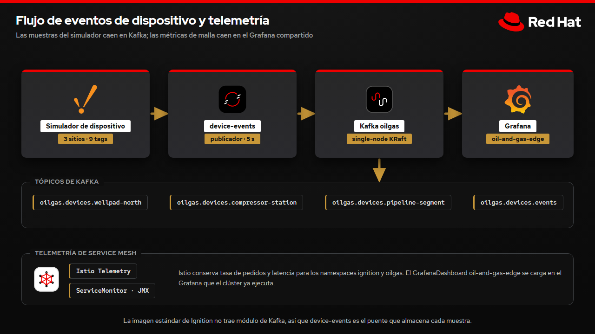

Una sala de control Ignition 8.3 en el hub, tres sitios de campo con Red Hat Device Edge sobre OpenShift Virtualization, eventos de dispositivo en Kafka y Connectivity Link como única puerta para el operador.
Los sitios industriales no están en el centro de datos. La sala de control sí. Este patrón modela esa separación como un único despliegue GitOps: un Gateway Ignition de sala de control corre en el hub de OpenShift, tres sitios de campo corren como máquinas virtuales RHEL sobre OpenShift Virtualization con Red Hat Device Edge (MicroShift) e Ignition Edge adentro, y las dos mitades se encuentran sobre el Gateway Network de Ignition. Las muestras de dispositivo se persisten en Kafka para que la historia sobreviva a una HMI cerrada, y el operador llega a la HMI únicamente por un gateway de Connectivity Link que exige un JWT de un realm de Keycloak dedicado.
Ignition 8.3 Standard, envuelto para correr bajo una SecurityContextConstraints de OpenShift y exponer un Service de Gateway Network ruteable en lugar del Service headless del chart.
Well pad, estación compresora y segmento de ducto; cada uno un guest RHEL con MicroShift e Ignition Edge que marca hacia la sala de control por el puerto 8060.
Operadores, gateways de Ignition y dispositivos de campo se emiten por separado. Los certificados de dispositivo se guardan en Vault y se proyectan de vuelta al namespace de borde.
Un Gateway de Connectivity Link con TLSPolicy y AuthPolicy. La Route de OpenShift que el chart de Ignition crearía queda apagada.
La imagen estándar de Ignition no trae módulo de Kafka, así que un publicador escribe cada muestra del simulador a un tópico por sitio más un tópico de eventos compartido.
Argo CD es dueño de cada objeto mediante sync waves ordenadas. No hay push de unidades Podman ni Ansible Automation Platform en el circuito.

| Sitio | Rol | Tags del simulador |
|---|---|---|
wellpad-north | Well pad upstream | presión de boca de pozo, caudal, nivel de tanque |
compressor-station | Compresión midstream | presión de succión, presión de descarga, vibración |
pipeline-segment | Segmento de ducto | presión de línea, temperatura, indicador de fuga |
La sala de control registra los tres simuladores. Cada gateway de borde registra solo el propio, con el
mismo nombre, de modo que una ruta de tag resuelve igual se la lea en la sala de control o en el sitio. La
VM kiosco (hmi-kiosk, 2 vCPU / 4 GiB) corre Firefox y nada más: no corre Ignition.
| Namespace | Dueño | Contiene |
|---|---|---|
ignition | este patrón | Gateway de sala de control, SCC, Services GAN y HTTP, Job de registro de simuladores |
oilgas | este patrón | Gateway, TLSPolicy, HTTPRoute, AuthPolicy, Kafka, certificados de dispositivo, telemetría |
oilgas-edge | este patrón | VMs de campo, VM kiosco, Secrets de cloud-init, certificados de dispositivo proyectados |
cert-manager | el template del clúster | Configuración de ClusterIssuer traída de rhbk-cert |
rhbk-operator | el template del clúster | El CR Keycloak rhbk existente, más el realm oilgas importado |
values-global.yaml # nombre del patrón + main.variant: hub
pattern-metadata.yaml
variants/hub/values-hub.yaml # aplicaciones y suscripción a AMQ Streams
charts/hub/control-room/ # Ignition 0.2.5 + SCC + Services GAN y HTTP
charts/hub/oilgas-gateway/ # Gateway, TLSPolicy, HTTPRoute, AuthPolicy
charts/hub/oilgas-identity/ # realm oilgas, client ignition-hmi
charts/hub/device-certs/ # oilgas-device-ca, PushSecret, ExternalSecret
charts/hub/mock-devices/ # registro del Programmable Device Simulator
charts/hub/kafka/ # clúster KRaft de un nodo y tópicos
charts/hub/device-events/ # publicador de eventos de dispositivo
charts/hub/telemetry/ # Istio Telemetry + dashboard de Grafana
charts/hub/device-edge/ # VMs de campo, cloud-init de MicroShift, kiosco
values-secret.yaml.template
docs/sizing.md
Argo CD aplica los charts en orden de sync wave. El orden no es cosmético: device-edge renderiza
cloud-init leyendo Secrets que crean las waves anteriores, así que tiene que ir al final.
| Wave | Aplicación | Namespace | Qué hace |
|---|---|---|---|
5 | cert-manager-config | cert-manager | Traída de rhbk-cert con ACME apagado y self-signed encendido. Crea la CA de laboratorio. |
6 | oilgas-identity | rhbk-operator | KeycloakRealmImport del realm oilgas y del client público ignition-hmi. |
7 | device-certs | oilgas | ClusterIssuer oilgas-device-ca, un Certificate por sitio, PushSecret a Vault y ExternalSecret de vuelta al borde. |
8 | oilgas-gateway | oilgas | Gateway de Istio, TLSPolicy, HTTPRoute y la OIDCPolicy oilgas-login. |
9 | kafka | oilgas | Clúster KRaft de un nodo oilgas sobre Kafka 4.1.0, cuatro tópicos, ServiceMonitor del exporter JMX. |
10 | control-room | ignition | Ignition 8.3 Standard, SCC ignition, Service GAN :8060, Service HTTP :8088. |
15 | mock-devices | ignition | Job que publica tres Programmable Device Simulator contra la API de configuración. |
16 | device-events | oilgas | Publicador que escribe una muestra cada 5 s a los tópicos por sitio y a oilgas.devices.events. |
17 | telemetry | oilgas | Istio Telemetry para ignition y oilgas, más el GrafanaDashboard. |
20 | device-edge | oilgas-edge | Tres VMs de campo con cloud-init de MicroShift, más la VM kiosco con Firefox. |
Kafka es el único operador que este patrón suscribe, porque es el único que el template de Field Content no provee ya.
| Operador | Namespace | Canal | Source |
|---|---|---|---|
| AMQ Streams | openshift-operators | stable | redhat-operators |
kubevirt-hyperconverged está en variants/hub/values-hub.yaml pero comentado. Hay que
descomentarlo, y poner cnv.enabled=true en device-edge, solo en un clúster que todavía no
tenga OpenShift Virtualization. Aplicar un segundo HyperConverged sobre el clúster del template es la
forma de romperlo.

control-room habilita certManager y crea el issuer compartido oilgas-gan-issuer.control-room-gan expone el puerto 8060 a los guests, y el Service control-room-http expone 8088 a la HTTPRoute. Ambos existen porque el Service que crea el chart upstream es headless, lo que lo vuelve un backend pobre para el Gateway y un DNS pobre para una VM.device-edge renderiza cloud-init copiando la CA del issuer y el certificado de cliente de ese sitio en /etc/oilgas del guest.control-room-gan.ignition.svc.cluster.local:8060.lookup de Helm. Si
device-edge sincroniza antes de que existan el Secret del issuer y el ExternalSecret del sitio, el
guest recibe un marcador comentado en lugar de un certificado. Hay que volver a sincronizar
device-edge y el próximo arranque de la VM toma el material real; sobre una VM que ya está
corriendo, se vuelve a ejecutar /usr/local/bin/oilgas-bootstrap-edge.sh.
| Ruta | Contenido |
|---|---|
/etc/oilgas/site.env | Nombre del sitio, host y puerto GAN de la sala de control, coordenadas del chart de Ignition |
/etc/oilgas/gan-ca.crt | CA de oilgas-gan-issuer, también agregada al trust store del guest |
/etc/oilgas/device.crt, device.key, device-ca.crt | Certificado de cliente del sitio emitido por oilgas-device-ca |
/etc/oilgas/mock-device.json | Definición del Programmable Device Simulator de este sitio |
/etc/oilgas/api-token | Token de la API de Ignition. Hay que crearlo y volver a correr el script de bootstrap. |
/usr/local/bin/oilgas-bootstrap-edge.sh | Instala MicroShift, despliega Ignition Edge y registra el simulador. Es idempotente. |
Podman queda instalado en el guest solo como herramienta de imágenes. Ignition Edge corre sobre MicroShift,
desplegado con el mismo chart charts.ia.io/ignition que la sala de control, en edición
edge.

Una TLSPolicy sobre el Gateway delega el ciclo de vida del certificado a cert-manager, y el realm
oilgas protege la HMI. La vigencia es de 2160h con renewBefore: 360h: 90 días,
renovado 15 días antes.
cert-manager-config se despliega con
acme.enabled=false y selfSigned.enabled=true, pero el chart upstream igual nombra al
ClusterIssuer letsencrypt-prod. Es una CA interna, no Let's Encrypt. Conservar el nombre evita
tener que cambiar el issuerRef de la TLSPolicy entre un laboratorio y un clúster público.
La sala de control es dueña de oilgas-gan-issuer. Cada gateway de borde confía en la CA detrás de
él, que es lo que hace que la conexión de Gateway Network en :8060 sea mutua y no apenas cifrada.
Un ClusterIssuer dedicado, oilgas-device-ca, emite un certificado client auth por sitio
con clave ECDSA P-256. External Secrets empuja cada uno a Vault en oilgas/devices/<sitio> y un
ExternalSecret lo proyecta de vuelta a oilgas-edge, donde cloud-init puede leerlo. El intervalo de
refresco es de una hora.
oc get clusterissuer oilgas-device-ca
oc get certificate -n oilgas
oc get pushsecret -n oilgas
oc get externalsecret -n oilgas-edge
cert-manager lee los Secrets de CA de un ClusterIssuer desde su propio namespace, por eso
ca.namespace es cert-manager y no oilgas.
oilgas-identity no despliega Keycloak. Importa un realm dentro del CR Keycloak llamado
rhbk que el template del clúster ya ejecuta, de modo que el patrón agrega un límite de identidad
sin ser dueño de un proveedor de identidad.
| Objeto | Valor |
|---|---|
| Realm | oilgas — display name "Oil and Gas", sslRequired: external, autoregistro apagado |
| Client | ignition-hmi — público, standard flow y direct access grants encendidos, implicit flow apagado |
| Redirect URI | https://ignition.<cluster-domain>/* y https://ignition.<cluster-domain>/auth/callback |
| Gateway | oilgas-gateway, gatewayClassName istio, hostname ignition.<cluster-domain> |
| Backend | control-room-http.ignition:8088 |
| OIDCPolicy | oilgas-login (extensions.kuadrant.io/v1alpha1) apunta al Gateway oilgas-gateway. El navegador redirige a https://rhbk.<cluster-domain>/realms/oilgas y vuelve a https://ignition.<cluster-domain>/auth/callback. |
La Route de OpenShift que el chart de Ignition crearía está deshabilitada
(ignition.ingress.enabled=false). El gateway es la única entrada. La OIDCPolicy
oilgas-login redirige el navegador a https://rhbk.<cluster-domain>/realms/oilgas
y el callback es https://ignition.<cluster-domain>/auth/callback. curl sin esa
sesión no devuelve la UI de Ignition.

device-events es un Deployment pequeño que reutiliza la imagen de Kafka de AMQ Streams que el
broker ya descarga (registry.redhat.io/amq-streams/kafka-41-rhel9, fijada por digest porque el
operador no publica un tag 4.1.0). Cada 5 segundos emite una muestra por tag, con los mismos nombres de tag que usan los
simuladores, al tópico de ese sitio y al tópico de eventos compartido. Los valores oscilan localmente, así
que la historia sigue acumulándose aunque nadie tenga la HMI abierta.
{"site":"wellpad-north","device":"wellpad-north","tag":"wellhead-pressure","value":1463.2,"ts":"2026-11-24T12:00:05Z"}| Tópico | Transporta |
|---|---|
oilgas.devices.wellpad-north | wellhead-pressure, flow-rate, tank-level |
oilgas.devices.compressor-station | suction-pressure, discharge-pressure, vibration |
oilgas.devices.pipeline-segment | line-pressure, temperature, leak-indicator |
oilgas.devices.events | Todas las muestras de todos los sitios |
El clúster es un Kafka 4.1.0 KRaft de un solo nodo con un volumen gp3-csi de 20 GiB,
dimensionado para una demostración y no para durabilidad productiva. Un ServiceMonitor raspa el exporter
JMX.
telemetry conserva las métricas de tasa de pedidos y latencia de Istio para los namespaces
ignition y oilgas, y carga un GrafanaDashboard llamado oil-and-gas-edge en la
instancia de Grafana que el template del clúster ya ejecuta
(openshift-cluster-observability-operator, selector de instancia
dashboards: grafana-observability). No se instala un segundo Grafana.
oc run kafka-consume -n oilgas --rm -it --restart=Never \
--image=quay.io/strimzi/kafka:0.45.0 -- \
/opt/kafka/bin/kafka-console-consumer.sh \
--bootstrap-server oilgas-kafka-bootstrap:9092 \
--topic oilgas.devices.wellpad-north \
--from-beginning --max-messages 1El clúster se pide con el template de Field Content. Los números de abajo son lo que realmente necesitan las tres VMs de campo, el kiosco, Ignition y Kafka; no son un piso teórico.
| Recurso | Pedido | Nota |
|---|---|---|
| OpenShift | 4.20, o la versión del template | Necesita OpenShift Virtualization con host CPU passthrough |
| Control plane | 3 × 8 vCPU / 32 GiB (m5a.2xlarge) | — |
| Workers | 3 × 16 vCPU / 64 GiB (m5a.4xlarge) | Conviene m5a.8xlarge si el catálogo lo ofrece. m5a.4xlarge es el mínimo y el margen queda justo. |
| Almacenamiento | RWO gp3-csi, 500 GiB libres | Cada VM de campo son 80 GiB de raíz más 40 GiB de datos |
| DNS | Wildcard *.apps.<cluster-domain> | El issuer self-signed evita necesitar Route 53 |
| Carga | CPU | Memoria | Disco |
|---|---|---|---|
| VM de campo × 3 | 4 vCPU | 16 GiB | 80 GiB raíz + 40 GiB datos |
hmi-kiosk | 2 vCPU | 4 GiB | 40 GiB |
| Ignition sala de control | 1 → 4 | 2 → 8 GiB | 20 GiB |
| Kafka | 1 → 2 | 2 → 4 GiB | 20 GiB |
Son 52 GiB de memoria de VMs antes del límite de Ignition. Con menos de tres workers las tres VMs de campo no entran a la vez. El detalle completo está en docs/sizing.md.
Antes que nada, confirmar el dominio del clúster y el secret store:
oc get ingresses.config.openshift.io cluster -o jsonpath='{.spec.domain}{"\n"}'
oc get clustersecretstore
Los charts esperan un ClusterSecretStore llamado vault-backend. Si el template lo nombró
distinto, hay que sobreescribirlo en device-certs y mock-devices.
git clone https://github.com/maximilianoPizarro/oil-and-gas-edge.git
cd oil-and-gas-edge
cp values-secret.yaml.template ~/values-secret-oil-and-gas-edge.yaml
# Completar rhel-guest-image.url ahora, e ignition-api.token después del commissioning
./pattern.sh make install| Secreto | Campo | Si falta | Lo usa |
|---|---|---|---|
ignition-admin | gateway-admin-password | generate | Login de admin del Gateway de sala de control |
ignition-api | token | prompt | Registro de simuladores contra la API de configuración |
rhel-guest-image | url | prompt | Origen del DataVolume de las VMs de campo |
keycloak-initial-admin | username, password | generate | Solo si se descomenta la aplicación rhbk-cert |
keycloak-db-secret | username, password | generate | Solo si se descomenta la aplicación rhbk-cert |
ignition-api/token, y el Job register-mock-devices va a tener éxito en alguno de sus
reintentos: el backoffLimit es 30, así que espera.
# URL del operador
echo "https://ignition.$(oc get ingresses.config.openshift.io cluster -o jsonpath='{.spec.domain}')"
# Contraseña de admin del Gateway
oc get secret -n ignition control-room-gateway-admin-password \
--template='{{ printf "%s\n" (index .data "gateway-admin-password" | base64decode) }}'
Grafana está en https://grafana-observability.<cluster-domain>: en el template de Field
Content, usuario admin, contraseña openshift. El dashboard se llama
oil-and-gas-edge.
Que Argo CD diga Synced no es la línea de llegada. Conviene recorrer esta lista antes de dar la instalación por terminada.
oc get applications -A
oc get clusterissuer
oc get certificate -A
oc get gateway,httproute,authpolicy,tlspolicy -n oilgas
oc get kafka,kafkatopic -n oilgas
oc get pods -n ignition
oc get vm -n oilgas-edge
oc get externalsecret,pushsecret -Aoilgas-device-ca está Ready, y también el issuer de laboratorio que cert-manager-config creó bajo el nombre letsencrypt-prod.wellpad-north, compressor-station, pipeline-segment.Programmed, y la HTTPRoute, la AuthPolicy y la TLSPolicy están aceptadas.curl -k -s -o /dev/null -w '%{http_code}' https://ignition.<cluster-domain> imprime 302 y el Location contiene protocol/openid-connect/auth. El navegador muestra el login de Keycloak del realm oilgas. Si vuelve la UI de Ignition sin login, oilgas-login no está enganchada.ignition están 1/1 y existe el Secret control-room-gateway-admin-password.hmi-kiosk están Running en oilgas-edge.oilgas.devices.wellpad-north.oil-and-gas-edge de Grafana muestra tasa y latencia de la HTTPRoute, y mensajes por tópico.
El Job termina con 1 cuando el archivo del token está vacío. Ese es el estado esperado antes de crear el
token. Hay que guardarlo en Vault bajo ignition-api/token, confirmar que el ExternalSecret produjo
control-room-ignition-api-token en el namespace ignition, y dejar que el Job reintente.
Un 409 de la API se toma como éxito: el dispositivo ya existe.
oc logs -n ignition job/register-mock-devices
oc get secret -n ignition control-room-ignition-api-tokenHay que entrar al guest y leer la salida del bootstrap. El script es deliberadamente tolerante: un RPM de MicroShift faltante, una instalación de Helm diferida y un certificado ausente son WARN y no una falla dura, así que la VM queda levantada y se puede arreglar en el lugar.
virtctl console -n oilgas-edge wellpad-north
sudo grep oilgas /var/log/messages
sudo /usr/local/bin/oilgas-bootstrap-edge.sh
Si /etc/oilgas/device.crt contiene un comentario en lugar de un certificado, device-edge
renderizó antes de que device-certs terminara. Hay que volver a sincronizar device-edge
en Argo CD y después correr de nuevo el script de bootstrap en el guest. Lo mismo vale para
/etc/oilgas/gan-ca.crt y el issuer de GAN.
Hay que verificar que la OIDCPolicy oilgas-login apunte al Gateway oilgas-gateway y que
oidc.issuerURL resuelva. El operador genera las AuthPolicies; si el target no existe, el redirect
no se aplica.
oc get oidcpolicy oilgas-login -n oilgas
oc get authpolicy -n oilgas
curl -sk https://rhbk.<cluster-domain>/realms/oilgas/.well-known/openid-configuration | head
El contenedor corre como UID/GID 2003. El chart control-room crea la SCC ignition y un
ClusterRoleBinding para ella. Si el pod queda trabado en un error de security context, la SCC no se aplicó
o la service account no está asociada a ella.
Un release ignition que haya quedado de una instalación manual no es este patrón. El release del
patrón se llama control-room. Conviene borrar el viejo antes de instalar.
Se hace merge a main. La Application del hub sigue esa rama y reconcilia. Hay que esperar a que
oc get applications -A vuelva a Synced antes de dar el rollout por terminado.
Se revierte el commit, o se apunta el targetRevision del Pattern al anterior. Este patrón no hace
backup de los Secrets de certificados: cert-manager los vuelve a emitir desde los objetos Certificate, así
que un Secret borrado vuelve y un Certificate borrado no, hasta que Git lo restaure.
./pattern.sh make uninstall
El rol de desinstalación de Validated Patterns está marcado como experimental upstream. Quita lo que el
Pattern creó. No vacía Vault, y no borra por vos los volúmenes de datos de las VMs: conviene revisar
oc get dv,pvc -n oilgas-edge después.
Tres charts necesitan el nombre nuevo, y lo necesitan idéntico, porque la sala de control y el gateway de borde registran el simulador con el mismo nombre:
# charts/hub/device-certs/values.yaml
sites:
- name: tank-farm
commonName: tank-farm.oilgas.local
# charts/hub/device-edge/values.yaml
sites:
- name: tank-farm
displayName: Tank Farm
description: Storage tank farm Device Edge site
program: |
0,tank-level,62,Good
5000,tank-level,64,Good
# charts/hub/kafka/values.yaml
topics:
- oilgas.devices.tank-farm
Después hay que agregar las entradas equivalentes en charts/hub/mock-devices/values.yaml y
charts/hub/device-events/values.yaml. El ClusterIssuer, el Gateway y el realm ya lo cubren: no hace
falta configurar nada de certificados ni de identidad.
No. Es un patrón de nivel sandbox. Kafka es un solo nodo, Ignition es una sola instancia, los "sitios" de campo son simuladores y la CA de laboratorio es self-signed. Demuestra la topología y el cableado GitOps, no un despliegue resiliente.
Sí, con trabajo. Habría que instalar a mano GitOps, cert-manager, External Secrets, Vault, Service Mesh,
Connectivity Link, Red Hat build of Keycloak, OpenShift Virtualization y Grafana, descomentar la aplicación
rhbk-cert y la suscripción kubevirt-hyperconverged, y poner cnv.enabled=true
en device-edge.
La imagen estándar de Ignition no trae ningún módulo de Kafka. En lugar de construir una imagen personalizada, el patrón corre un publicador pequeño al lado. Y es honesto sobre lo que es: las muestras que escribe espejan los nombres y los rangos de los tags del simulador, no se leen del Gateway.
No. hmi-kiosk corre Firefox apuntando a la URL del gateway. Existe para poder demostrar el camino
del operador desde dentro del clúster, sin necesidad de una estación de trabajo que confíe en la CA de
laboratorio.
No. GitOps reemplaza el push de unidades Podman que usaba hmi-demo. Podman queda en el guest solo como herramienta de imágenes.